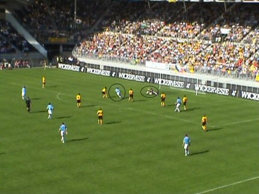
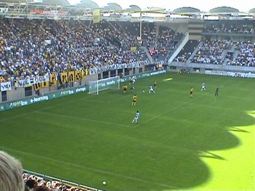

|
Roda JC - PSV (0-3) 28 augustus 2005
|

Near Field Communication. Het testpanel verzamelt zich voor het PLS.
Uiterst rechts pa Pa-Moudo-Kah
Dr. Frusti presenteert de nieuwe omloopsnack: Frietje-bier.
Even houdt het publiek zijn adem in; is dit de nieuwe spits van Roda? Heeft
Nol het dan toch geflikt?!
Helaas geen spectaculaire landing van een Argentijn, Noor, Tunesiër etc.
Slechts 400 PSV-supporters in het gastenvak.
Indrukwekkend afscheid van Arouna Koné.
Spandoeken op west:
RODA JC UITZENDBUREAU
WIJ KRIJGEN DE SCHIJT VAN DIT WANBELEID
Spandoek op zuid:
BESTUUR OPRUTTEN
Een van de sfeermannen op Z16 !!
Cissé en Ooijer spelen een potje zitvoetbal. PSV speelt rustig aan. Roda
ploetert en prutst er op los als een onsamenhangend en fantasieloos team.

Kujovic redt op een keihard schot.
Na geklungel op het middenveld kan Afellay de bal naar Farfan sturen.
Kah kan Farfan niet meer afstoppen waarna deze PSV'er Kujovic die te ver
voor zijn doel staat kan passeren: 0-1 (37').

De tegenvallende Sonko wordt genadeloos onderuitgeschoffeld door Cocu.
In de tweede helft speelde Roda nog lustelozer waardoor het interessanter
werd om naar potentiële Rodameëdsjer en spandoeken te kijken.
Laatste wedstrijd van Lee voor PSV die volgens de laatste berichten voor
3.000.000 euro naar Newcastle verkast.

Kujovic krijgt een bal niet onder controle. Uit de zo ontstane rebound kan
de vers ingevallen Beasley gemakkelijk 0-2 intikken: 0-2 (63').
Kans voor het kanon Bodnar.
Cocu glijdt de derde treffer binnen uit een pass van Farfan: 0-3, (86').
Het ophangen van de Gambia-vlag leidde deze keer niet tot het gewenste
resultaat....
Kah met ultrablitz kapsel. Hij en Vicelich bezochten de Kickoff.
Kah met
Roda-girl Chantal.
In goede en in slechte tijden: de Gerrie Senden Fanatics !!
Het logo van Charlton Athletic staat onderaan, maar dit "Roda van London"
staat op een gedeelde eerste plaats in de Premier League.
Een sombere uitslag maar een zonnige zondag waarop het goed toeven is
voor de Roda-groupies. In hoeverre de wanprestatie van Roda af te wimpelen
is op het verlies van
Kone zal nooit duidelijk worden. Wel is aangetoond dat een club zonder
ambitie slechter af is dan een club met geld.
Na drie wedstrijden is Roda afgegleden naar een troosteloze 12e plaats.
Koempels Pleasure Dome
|